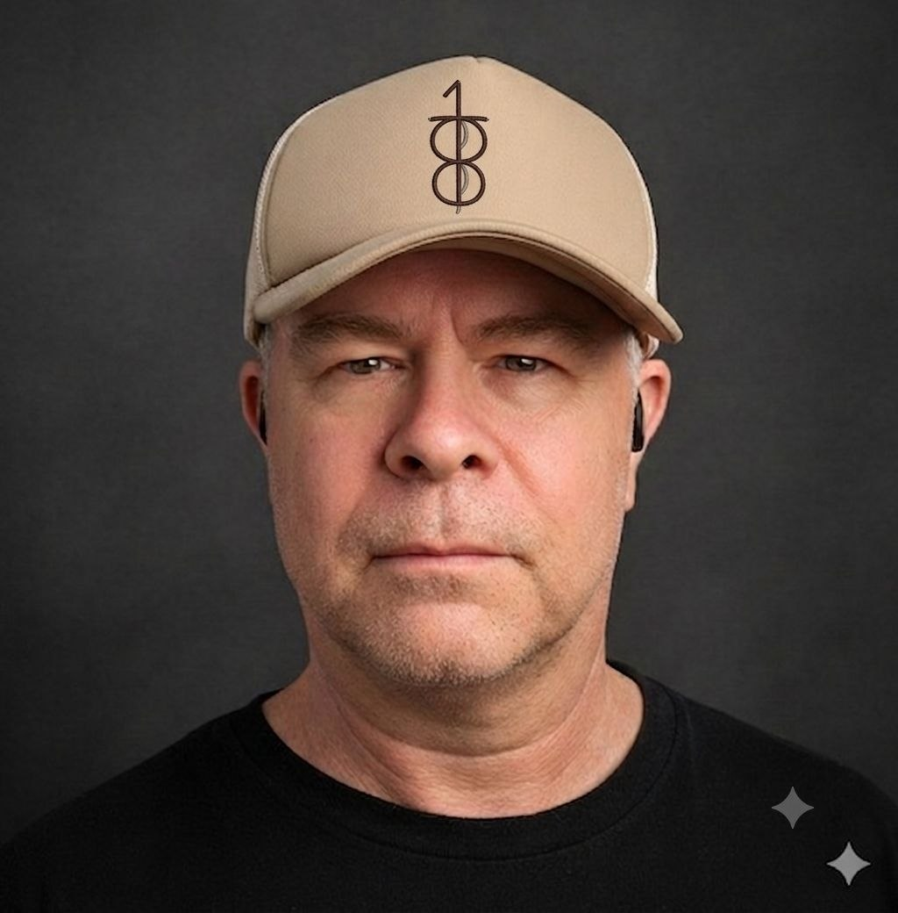

Build with Jesus pairs the one to eight guide (a free practical guide for young people through eight essentials) with the Bible and the teachings of Jesus. Young people read, build and serve with an AI agent beside them, and every finished thing goes to their church or their community.
For young people, and for the churches, schools and charities who walk with them.
I’m a young person
Eight essentials, activities and audio, at your own pace. Add the agent and it walks beside you while you build.
Start with the guide →I lead a church or youth group
See how a build day works, what it costs, and how to run the programme with your young people.
For groups and churches →Build with Jesus is about using the latest tools to primarily build digital artefacts for young people, their churches and wider community.
Today, we have the AI technology to empower any young person to build custom software and use AI agents for increased learning and productivity. Furthermore, building takes many other shapes, the one to eight guide and their AI agent encourages young people to participate outside of the digital world.
The whole idea in four daily moves. The guide teaches the eight essentials; the Bible and the agent walk beside them; the week's work ends in someone else's hands.
A short passage each morning with one question to sit with. The agent helps teach the Bible passage, explains the setting, points to the teachings of Jesus, and can help shape a prayer for the day. It never replaces your pastor, and it never invents a verse.
A short lesson, taken at your pace: the eight essentials, one skill at a time. Planning, focus, working with AI, finishing what you start. Every skill lands in the same week's build, so it is learned by doing.
The day's small move on a real project: personal software, something for the family, and each term, something for the church. The eight essentials teach the craft and the character together.
Finished things are given away. Presented to the youth group, handed to the church office, put to work on the noticeboard. Nothing sits in a folder. The gift is the point.
The eight essentials: The ability to sit in silence · Your body is a home · Useful skills for real life · Digital self-defence · Real community · Knowledge you can carry · Make room for the outside · Test what you believe. Read the guide free →
Every build is small enough to finish and worth finishing. Built on the young person’s own machine, phone friendly, and handed over at the end. Find the annoyance, build the small thing, give it away.
A one page site with service times, what to expect, and a map. The church's front door, built properly.
Volunteer scheduling for welcome team, setup and children's ministry. One link, no accounts, no app.
Coordinate meals for a family walking through hard weeks. Private by default, no personal data exposed.
Last Sunday's talk turned into five discussion questions for youth group. The agent helps; the young person decides.
Carols night, community barbecue, the fete. An invite page and a QR code for the notice sheet.
A simple site for the church op shop or local charity shop. Hours, donations guide, a photo or two.
Your youth group is full of capacity. Your church is full of real needs. Put them in the same room. Religious schools, homeschool families and charities run the same programme.
A Saturday, a room with wifi, and snacks. The young people bring curiosity, the church brings one real need, and a finished thing comes out the other side.
Fund places for young people in your own church. They build for the community that sponsored them, and the church keeps what they make.
One page on how to run it: what a build day needs, how the term flows, and what to say to parents and guardians.
Want it in person? Brendan runs the workshop live at your church. Bring it to your area.
A reading companion, never an authority. It holds the reading plan, asks better questions than it answers, and sends a young person back to their church and its leaders for teaching.
Quotes checked, content reviewed. Scripture is verified against a named translation, and a person reviews every line of faith content before it ships.
Skill in service is an old pattern. The first person in the Bible described as filled with the Spirit was Bezalel, a craftsman called to build (Exodus 31). The workbench has always been holy ground.
Whatever you do, work at it with all your heart, as working for the Lord. Colossians 3:23
The Lord's Prayer, read slowly, with a short watch on praying it daily.
Read the Lord’s Prayer
Build with Jesus is made by Brendan O’Keefe. He founded onetoeight and wrote the one to eight guide, the free practical guide for young people now read in ten languages, and he travels to run the Build with Jesus workshop live at churches.
The agent, the lessons and this site are built the same way the young people build: start small, learn by making, finish well, and give the finished thing away.
No. It helps teach the passage and keeps the rhythm going, and every question worth asking goes back to your church and its leaders. Teaching stays with people.
Christian young people who want to build, whether they are still at school or just out of it. The pace is theirs, and everything happens on their own machine.
One real need and a room with wifi. A build day is a Saturday. The rest is the guide and the agent, and we walk you through the first one.
The agent is $33.33 (AUD), one payment, yours to keep. The guide is free to read, the leaders guide is $88 (AUD), one purchase for every leader and every group, and build days are worked out with each church. Sponsored places will exist for families who need them.
A phone or a computer and some curiosity. Their work stays private on their own machine, and a church's data stays with the church.
One short note now and then: build days, new builds, things worth copying. Nothing else.
✓ You're on the list. Talk soon.
Something went wrong. Please try again.